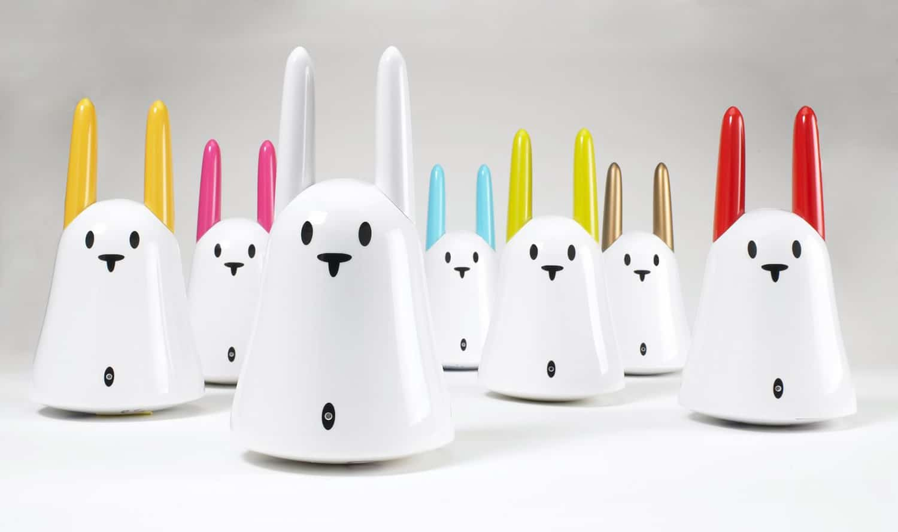

The Nabaztag is a WiFi enabled ambient device shaped like a bunny. It has moveable ears, a speaker, several LEDs, and a button on its head. The second generation (the one I have) also has a microphone, an RFID sensor, and supports MP3 audio streams.

These Nabaztag bunnies rely on a server to function. Originally the company that produced these things provided for one but after they went bankrupt in 2009, thousands of these devices were rendered useless.
Luckily, various alternative servers were developed. These servers often make use of plugins to give the connected bunnies certain abilities. Extending your bunny with new capabilities requires some programming skills if there is no existing plugin that already does what you want.
I developed my own Nabaztag server in Prolog that you can download from this repository. Instead of making use of plugins to extend a Nabaztag’s capabilities, my server simply forwards all events to an IFTTT webhook. The server also exposes an API to do things like play audio, flash LEDs, move the ears, do TTS, etc. This API can be called from the IFTTT platform.
About the IFTTT plaform
In case you don’t know, IFTTT (which stands for IF This Then That) is a platform that allows you to connect certain actions to certain triggers. You can for instance setup a ‘recipe’ to turn on your Philips Hue lights (the action) when you phone connects to your home WiFi network (the trigger). Another example would be a recipe that sends you a Telegram message (the action) when the weather forecast predicts it’s going to rain (the trigger). By making use of IFTTT webhooks we can integrate triggers and actions of the Nabaztag into our recipes.
Example recipes
I’ll describe a few recipes that I setup to give you an idea of the possibilities. In the recipes below I assume the Nabaztag server is running and reachable at IP address 123.123.123.123.
Text to speech
One recipe makes the Nabaztag greet me when I get home. For this you need to have the IFTTT app installed on your phone.
- Trigger: Android device, Connects to a specific WiFi Network
- Network name: SSID_of_your_home_WiFi
- Action: Webhooks, make a web request
- URL: http://123.123.123.123/vl/api/tts.jsp
- Method: POST
- Content Type: application/x-www-form-urlencoded
- Body: sn=0013d3123456&text=Welcome%20home
Replace the parts in italics (the network name, IP address in the URL, and bunny’s serial number in the body) with your specifics.
Play sounds
I also wanted the bunny to strike the hour like a cuckoo clock. For this I added 24 recipes, one for each hour. This is the one for 5PM.
- Trigger: Date & Time, Every day at
- Time: 05 PM, 00 minutes
- Action: Webhooks, make a web request
- URL: http://123.123.123.123/vl/api/play.jsp
- Method: POST
- Content Type: application/x-www-form-urlencoded
- Body: sn=0013d3123456&url=http://123.123.123.123/vl/sounds/cuckoo5.mp3
Again, change the options in italics to your specifics.
Show ambient patterns
The Nabaztag has various built-in ambient LED patterns that it can show when not doing anything else. There are built-in patterns that show the state of the weather, the market, traffic, messages, and air quality. We can set these ambient patterns on receiving certain triggers. For instance, we can set the ambient weather pattern to rain when the forecast for a certain location is rain:
- Trigger: Weather Underground, Current condition changes to
- Current Condition: Rain
- Location: Your location
- Action: Webhooks, make a web request
- URL: http://123.123.123.123/vl/api/ambient.jsp?sn=0013d3123456&weather=rain
- Method: POST
- Content Type: text/plain
- Body:
Add similar recipes for other weather conditions. Similarly one can make the bunny show ambient patterns that indicate what’s going on in the financial market if you’re keen on keeping track of that.
Record a message
One can also record a message on the Nabaztag by keeping the button on its head pressed. After the bunny beeps, you can speak into its microphone. On release, the recorded message is sent to the server. The server saves the message to a WAV file and sends the location of that file to the IFTTT platform where it can be caught using a webhook. The following recipe shows how this can be used to send an email every time a message is recorded.
- Trigger: Webhooks, Receive a web request
- 0013d3123456_record_click
- Action: Email, Send me an email
- Subject: New message from your Nabaztag
- Body: Dear owner,<br><br>On {{OccurredAt}} a message was recorded on your Nabaztag. Click <a href=”{{Value1}}”>here to download</a>.<br><br>Sincerely,<br><br>Your favourite bunny
Conclusion
These examples should be enough to get you started.
Read the README.md file in the repository for details on how to configure the server and how to use the API. Take note that before running the server you’ll need to enter the Nabaztag’s serial number, your IFTTT Webhook key, and server details into the config.pl file.
Share your recipe ideas in the comments below!